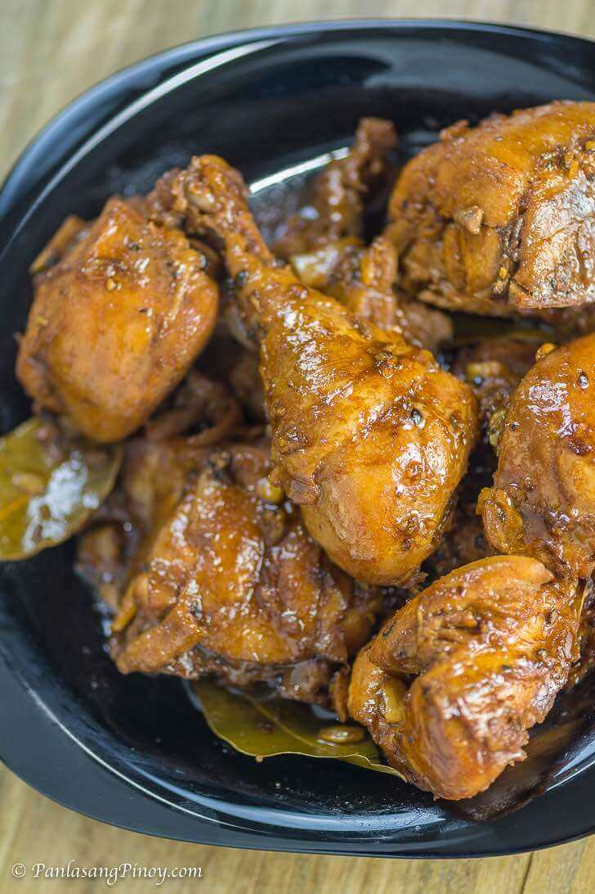

Chicken Adobo

Description
Chicken Adobo is a type of Filipino chicken stew. Chicken pieces are marinated in soy sauce and spices, pan-fried, and stewed until tender. The dish gained popularity because of its delicious taste and ease in preparation.
The taste of juicy chicken in a succulent, umami adobo sauce makes chicken adobo a comfort food for all ages. From kids to adults, we can’t get enough of this mouthwatering meal!
Ingredients
- 2 lbs chicken cut into serving pieces
- 3 pieces dried bay leaves
- 8 tbsp soy sauce
- 5 cloves garlic crushed
- 4 tbsp white vinegar
- 3 tablespoons cooking oil
- 1/4 teaspoon salt (optional)
- 1 teaspoon sugar
- 1 teaspoon whole peppercorn
Steps
- Combine chicken, soy sauce, and garlic in a large bowl. Mix well. Marinate the chicken for at least 1 hour. Note: the longer the time, the better
- Heat a cooking pot. Pour cooking oil.
- When the oil is hot enough, pan-fry the marinated chicken for 2 minutes per side.
- Pour-in the remaining marinade, including garlic. Add water. Bring to a boil.
- Add dried bay leaves and whole peppercorn. Simmer for 30 minutes or until the chicken gets tender.
- Add vinegar. Stir and cook for 10 minutes.
- Put-in the sugar, and salt. Stir and turn the heat off.Serve hot. Share and Enjoy!